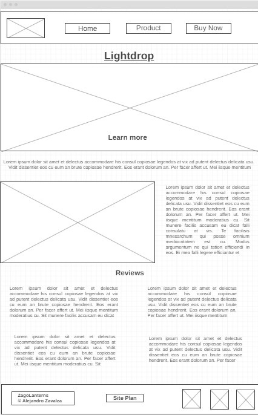

Overview
Purpose
The purpose of this website is to present a product called Lightdrop. It will have a commercial for the product, photos, comparison chart of models the company offers, customer reviews, and funcionalities of the product.
Audience
Audience is for all ages
Branding
Website Logo
Style Guide
Color Palette
Palette URL: https://coolors.co/396e94-e7c24f-a43312-381d2a-aabd8c| Primary | Secondary | Accent 1 | Accent 2 |
|---|---|---|---|
| [#396E94] | [#E7C24F] | [#A43312] |
Typography
Heading Font: Oswald
Paragraph Font: Lato
Normal paragraph example
Home page will present you with a video of the product “Lightdrop”. The video is a commercial that explains the function of this project, how to use it, and models available. After watching the video users will be engaged and will have a good idea of what Lightdrop is.
Colored paragraph example
Home page will present you with a video of the product “Lightdrop”. The video is a commercial that explains the function of this project, how to use it, and models available. After watching the video users will be engaged and will have a good idea of what Lightdrop is.
Navigation
Site Map
Content
Home page
Lightdrop has revolutionized the way we interact with light. With a simple touch you open the door for countless activities, all accompanied by your favorite lightdrop model. Whether you are camping or swimming, cave exploring or at home; lightdrop is the perfect lamp to bring light to every one of your hobbies. A dynamic light for dynamic people.
Quotes: Lightdrop is the perfect lantern for camping, we never forget it. - A lantern that floats and is waterproof? Take all my money. - The infrared model is a great hand heater. - If you want to buy a lantern, lightdrop is the way to go.
Images and video for the Home page
[Page 2]
Comparison chart for Standard Lightdrop and Infrared Lightdrop comparing 7 features.
Waterproof - The ocean is no limit for the Lightdrop. The silicon material provides a full cover for delicate pieces of technology inside. This allows lightdrop to be able to be fully submerged in water and work just as perfect. It can reach up to 20 ft underwater so you can make the underwater world your playground.
Material - Lightdrop is made from a soft but durable, and flexible silicon material. Our engineers have invested in the highest quality silicon made for lamps that will not only cover the LEDs but enhance them.
Light - We have created a small lantern with a powerful light source. Our technicians have placed inside LEDs that produce over 1200 lumens. The infrared model is just as bright, but red. It emits infrared rays ranging from 800nm to 1mm wavelength.
Battery - In our team we have decided that batteries is a thing from the past. Lightdrop comes with a charger so that you never have to buy batteries for a lantern again. A full charge of 2 hours will give you 12 hours of use. Don’t have 2 hours? Turn on speedlight mode and in 15 minutes of charge, your lightdrop will be good for 5 hours.
Images for the Page 2


[Page 3]
We have always wondered if there was a lantern that could do it all. A lantern that could be brought underwater, dropped, squeezed, emit heat. However, when we imagined all of this, we would imagine a monstrous light. At Lightdrop our goal was to make things simple and create a practical product that could adapt to anything. That is how the idea of lightdrop was turned on. Our product gives you the most with less. Lightdrop allows you to bring light to any situation without having to carry a heavy unconventional object. This is a product that adapts to your situation, and will never disappoint you.
Images for the Page 3

Wireframes
Create three wireframes for your site. One for each page and list them here
Home
Each quote will be in its seperate box. The video will be the main focus of the main page.
[Page 2]
Comparison chart will be simple. Each section describing functionalities will be accompanied by a big image.

[Page 3]
The forum will be used to buy the product. It wil lask for name, DOB, model selected, and payment info.